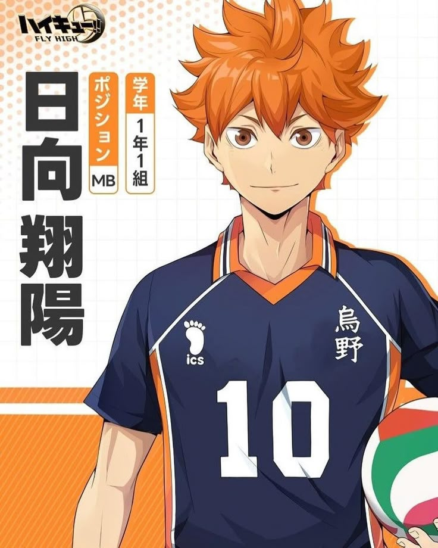
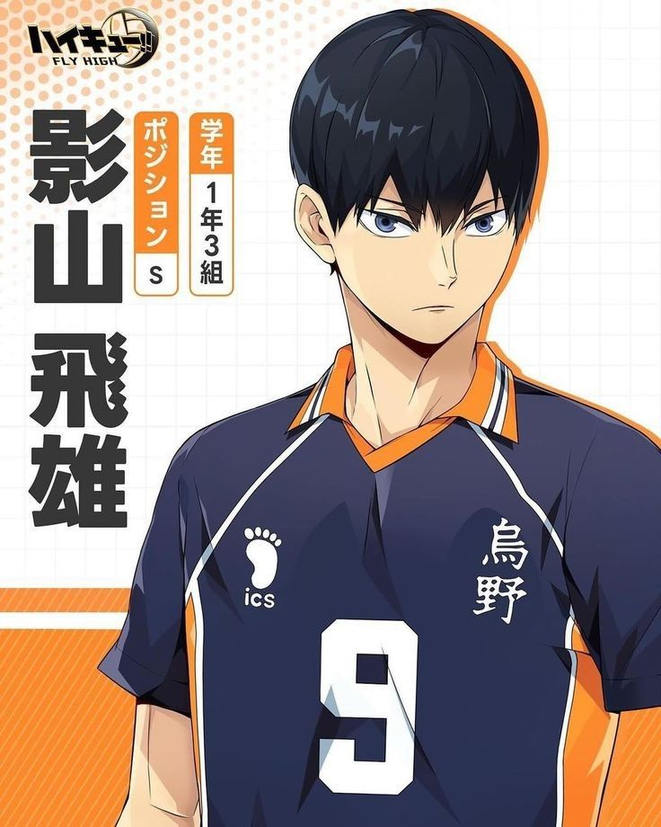
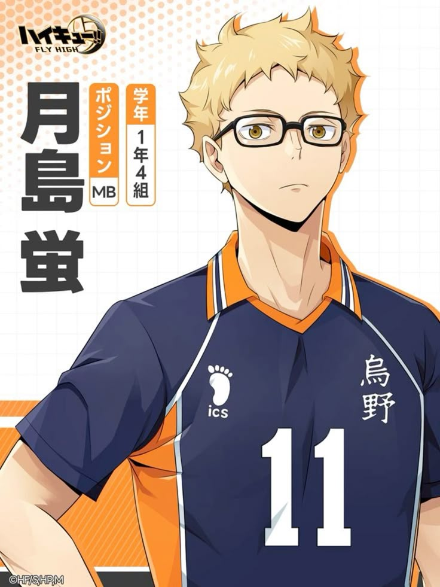
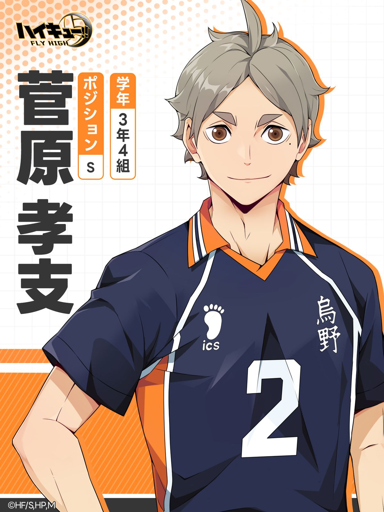
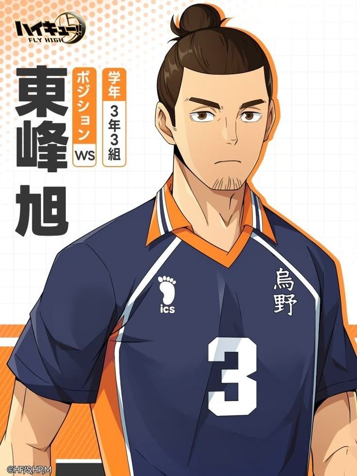
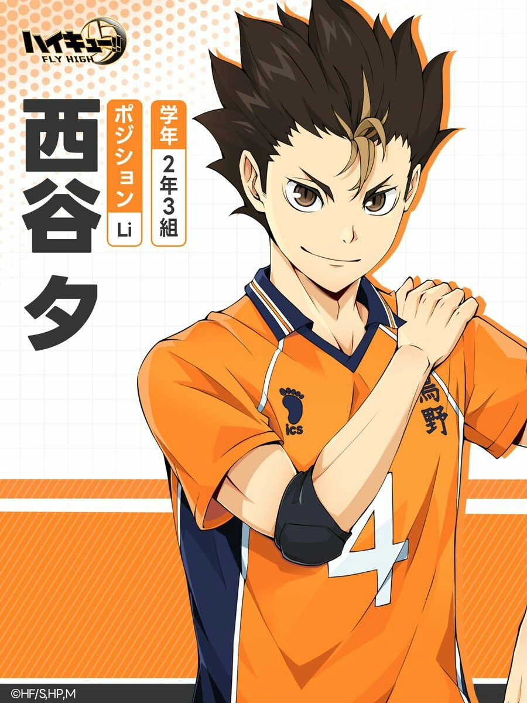

Members

Hinata Shoyo

Tobio Kageyama

Kei Tsukishima

Daichi Sawamura

Koshi Sugawara

Asahi Azumane

Release Date: April 6, 2014
Director: Susumu Mitsunaka
Genre: Sports, Comedy, Drama
Haikyuu!! is a Japanese anime series based on the manga by Haruichi Furudate. It follows Shoyo Hinata, a high school student determined to become a top volleyball player despite his small stature. With passion, determination, and teamwork, Hinata and his teammates rise through challenges both on and off the court.
The story begins with Hinata joining Karasuno High and forming an unexpected rivalry-turned-partnership with Kageyama.
Karasuno trains hard, faces strong opponents, and grows stronger in the Spring Tournament.
The ultimate showdown against Shiratorizawa — a season full of intensity, growth, and unforgettable matches.
The Haikyuu!! anime is returning with two new sequel projects announced in March 2025: the film Haikyuu!!: VS The Little Giant, adapting the Karasuno vs. Kamomedai match, and the special episode The Place Where Monsters Go, covering Fukurodani vs. Mujinazaka. These new projects follow the recent release of Haikyu!! The Dumpster Battle, the first film in a planned two-part conclusion to the series, which adapted the Karasuno vs. Nekoma match